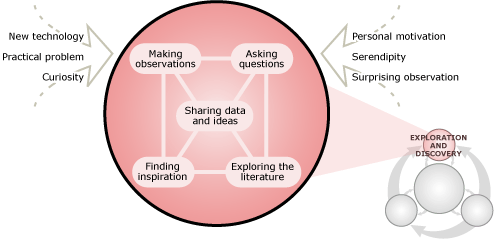
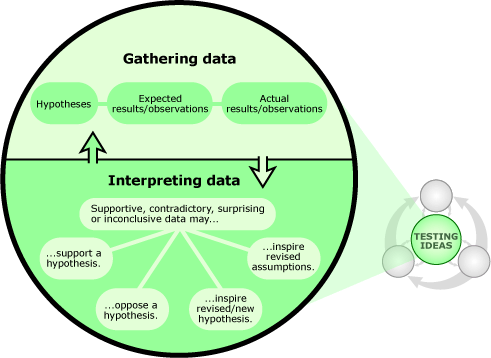
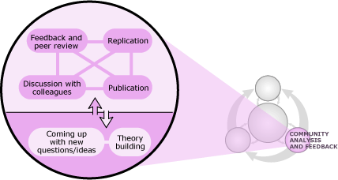
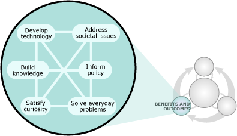

The process of science involves many layers of complexity, but the key points of that process are straightforward:
There are many routes into the process - from serendipity (e.g., being hit on the head by the proverbial apple), to concern over a practical problem (e.g., finding a new treatment for diabetes), to a technological development (e.g., the launch of a more advanced telescope) - and scientists often begin an investigation by plain old poking around: tinkering, brainstorming, trying to make some new observations, chatting with colleagues about an idea, or doing some reading.
Scientific testing is at the heart of the process. In science, all ideas are tested with evidence from the natural world, which may take many different forms - from Antarctic ice cores, to particle accelerator experiments, to detailed descriptions of sedimentary rock layers. You can't move through the process of science without examining how that evidence reflects on your ideas about how the world works - even if that means giving up a favorite hypothesis.
The scientific community helps ensure science's accuracy. Members of the scientific community (i.e., researchers, technicians, educators, and students, to name a few) play many roles in the process of science, but are especially important in generating ideas, scrutinizing ideas, and weighing the evidence for and against them. Through the action of this community, science is self-correcting. For example, in the 1990s, John Christy and Roy Spencer reported that temperature measurements taken by satellite, instead of from the Earth's surface, seemed to indicate that the Earth was cooling, not warming. However, other researchers soon pointed out that those measurements didn't correct for the fact that satellites slowly lose altitude as they orbit and that once these corrections are made, the satellite measurements were much more consistent with the warming trend observed at the surface. Christy and Spencer immediately acknowledged the need for that correction.
The process of science is intertwined with society. The process of science both influences society (e.g., investigations of X-rays leading to the development of CT scanners) and is influenced by society (e.g., a society's concern about the spread of HIV leading to studies of the molecular interactions within the immune system).
